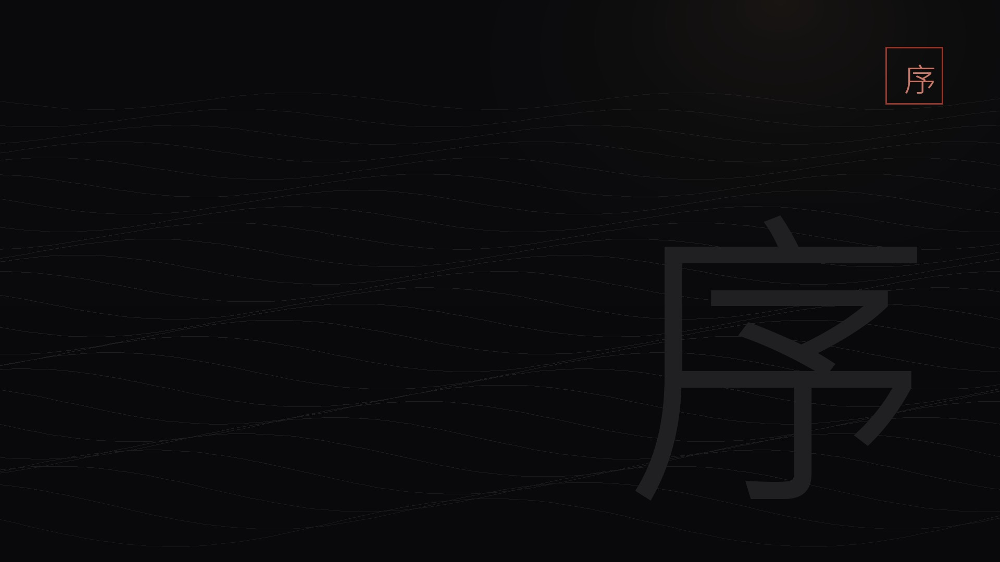

系統
三種光，三種答案
序章・練武場
敵人出招時身上的光，就是正確解法：藍光要完美格擋，紅光要完美閃避，黑光只能閃避——用格擋接黑光會立刻清空自己的殺氣。完美格擋不消耗殺氣，反而會大量削減對方的殺氣；完美閃避則能繞到側後方。
藍光＝格擋紅光＝閃避黑光＝絕不能格擋

馬車、追兵、一場沒有勝算的雪。序章沒有會錯過的東西，但它決定了你接下來六十多個小時能不能活得舒服。把藍光、紅光、黑光三件事練成本能，比任何裝備都值錢。
序章沒有支線、沒有商店、沒有時限。唯一會影響後面的，是你有沒有把「格擋藍光、閃避紅光、閃避黑光」練順。
只保留確認對應的頭目實機畫面；其餘一律用名刺卡，避免圖不對題。
 頭目名刺
頭目名刺
 頭目名刺
頭目名刺
完成度只存在你的瀏覽器；換裝置不會同步。